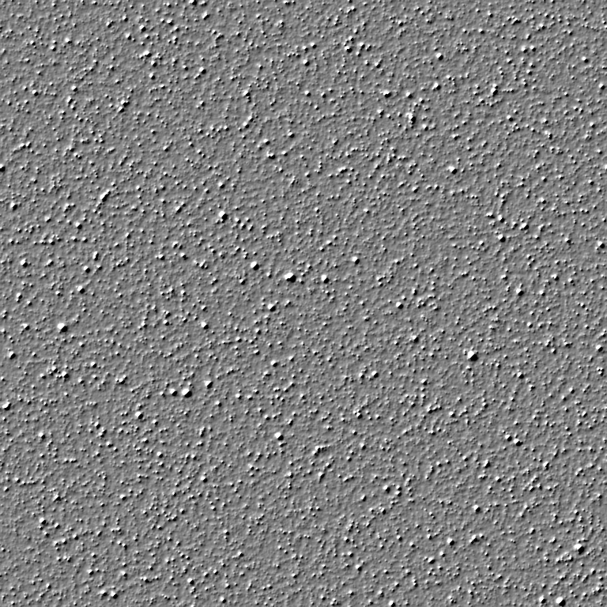
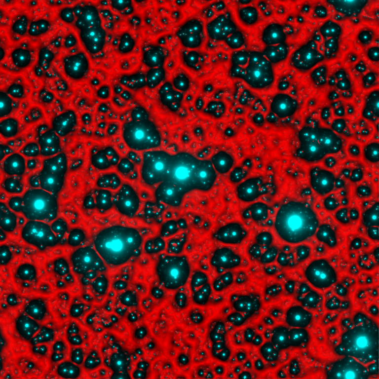

Can a single-layer convolutional neural network hallucinate snowflakes when given white noise as input? The answer is yes.
Here we show a gallery of textures created by such “single layer CNN”.
More precisely, the basic construction depends on three functions:
\(f\) a probability density on \(\mathbf{R}\)
\(g\in L^1_{loc}(\mathbf{R^2})\) a convolution kernel on the plane
\(h:\mathbf{R}\to[0,255]\) a monotonic tone mapping
To generate a random texture \(I\), run the following algorithm
Build a white noise image \(n\) of distribution \(f\).
Compute \(I=h\circ (g*n)\)
The function \(h\) is chosen to transport the histogram of \(g*n\) into \([0,255]\). For example, a simplest color balance or an Otsu thresholding. The kernel \(g\) is typically positive and radial, or a derivative of a radial function.
Note: This is a fully reproducible document. Each greyed-out section is the complete script used to produce the corresponding image. All of them are drawings over a blank canvas of arbitrary size:
plambda zero:768x768 "" -o canvas;For numerical reasons, especially with non-positive kernels, some of the computations are performed in the frequency domain. Thus, sometimes it may not be evident that there is a single linear filter. But all the textures in this page are indeed single-layer.
plambda canvas randc | blur c 0.5 | plambda - 'x x%m > 255 *' -o binary.pngComment: this is Cauchy white noise blurred with a Cauchy kernel, binarized at the median value.
plambda canvas randc | blur disk 30 | qauto -p 1 - disks.pngComment: This is Cauchy white noise blurred with a circular kernel, followed by a simplest color balance that saturates \(1\%\) of the pixels.
plambda canvas randp | blur c 1 | qauto -p 1 - starfield.pngComment: This is Pareto white noise blurred with a Cauchy kernel, followed by a simplest color balance that saturates \(1\%\) of the pixels.
SIGMOID='2 * tanh 1 + 2 /'
RED='dup 1 rot - rot 1 1 1 join3 * 0.7 0.1 0.1 join3 * + 255 *'
plambda canvas randp|blur c 1|plambda - "x x%O80 - $SIGMOID $RED" -o blood.pngComment: this is exactly the same image as starfield.png, but with a red palette.
plambda canvas randu | blur -s z .4 | plambda - 'x x%O80 > 255 *' -o islands.pngComment: uniform white noise, blurred by a kernel of the form \(1/\log(r)\), binarized to the 80th quantile.
SIGMOID='4e4 * tanh -1 1 qe'
plambda canvas randg | blur o 0.1 | plambda - "x x%m - $SIGMOID" -o clouds.pngComment: white Gaussian noise, blurred by a kernel of the form \(\log(r)\), plus a \(\tanh\) contrast change centered around the median value.
plambda canvas randg | fft | plambda ':R /' | ifft | qauto - multiscale.pngComment: this is fractal or pink noise, obtained by forcing a spectral decay of the form \(1/|\xi|\).
plambda canvas ":x :y join 6 0 join cpow cimag :r 9 ^ / randc 3 ^ join" |\
fft | plambda "halve cprod" | ifft | qeasy 2e17 5e17 - snowflakes.pngComment: this is a Cauchy-like white noise, filtered by the non-positive kernel \(k(x,y) = \frac{\mathrm{re}\left\{(x+iy)^6\right\}}{(x^2+y^2)^\frac{9}{2}}\), and a threshold that keeps only the highest positive values.
KERNEL=':x :y join 13 0 join cpow creal :r 13.5 ^ / 3 fmax 3 -'
PALETTE='dup rot 128 2 / + 0 join3'
plambda canvas "$KERNEL randp join" | fft | plambda 'halve cprod' | ifft |\
qeasy 0 3e4 | plambda - "$PALETTE" -o dandelions.pngComment: the same construction as snowflakes.png with a different degree of polynomial and a green color palette.
KERNEL=':x :y join 7 0 join cpow creal :r 8 ^ / 3 fmax 3 -'
plambda canvas "$KERNEL randp join" | fft | plambda 'halve cprod' | ifft |\
qeasy 1e5 9e5 - heptachords.pngComment: yet another polynomial kernel with a carefully selected contrast change.
plambda canvas randp | blur l 10 | plambda 'x,nf' | qeasy 0.4 0 - neurons.pngComment: This is Pareto noise filtered by the derivative of Laplace kernel. The final contrast change enhances the near-zero part of the image.
plambda canvas randp | blur i 0.3 | plambda 'x,nf' | qeasy 0.1 0 - sponge.pngComment: This is the same as neurons.png, but using a Shepard instead of a Laplacian kernel.
plambda canvas 'randp randp randp join3' | blur i 0.3 | \
plambda 'x,nf vmin' | qauto - lava.pngComment: Minimum of several instances of Pareto noise filtered by the derivative of Shepard kernel.

plambda canvas randg | blur l 30 | plambda 'x,nf -1 *'|qauto -p 0 - folds.pngComment: this is white Gaussian noise blurred by the derivative of a large Laplace kernel. The resulting, nearly constant image, is then stretched to span a visible dynamic range.

plambda canvas 'randp sqrt' | blur l 2 | plambda 'x,S' | qauto -p 1 - stucco.pngComment: this is the smoothed directional derivative of a high-variance white noise.
plambda canvas 'randu randu randu randu randu nstack njoin' | blur g 20 |\
plambda vmax | qauto -p 0.1 - blobs.pngComment: this is the max of four Perlin noises.

plambda neurons.png starfield.png "dup join3" -o combined.pngComment: since many of the images above arise from exactly the same instance of white noise, they are closely related. Thus, they can be combined as different channels of a color image to obtain funny effects.
plambda dandelions.png starfield.png + | qauto -i -p 0.3 - combined2.pngFor unrelated images, the effect is less striking.
The programs required to run these scripts are available in imscript: http://github.com/mnhrdt/imscript.
Here are the help messages of the four main programs:
qauto
Qauto quantizes an image into [0,255].
The image is trasformed by an affine contrast change I -> a*I + b
and then the colors are saturated and quantized into [0,255].
The parameters (a,b) of the contrast change are computed to statisfy
certain conditions. By default, they are chosen so that 5% of the pixels
are saturated.
Usage: qauto in.tiff out.png
or: qauto in.tiff > out.pnm
or: cat in.tiff | qauto > out.pnm
Options:
-p X use a percentile of X% (default X=5)
-f do not quantize the output, only rescale the values
-i treat each pixel dimension independently
-h display short help message
--help display longer help message
Examples:
qauto in.tiff out.png Quantize an image by simplest color balance.
qauto -i in.png out.png Remove color biases
blur
Blur convolves the input image by the requested positive kernel.
Only the first letter of the kernel name is considered.
If the name of the kernel is uppercase, it subtracts the result
from the original image.
Usage: blur KERNEL SIZE in.tiff out.tiff
or: blur KERNEL SIZE in.tiff > out.tiff
or: cat in.tiff | blur KERNEL SIZE > out.tiff
Kernels:
square a square block of the given radius
disk a rasterized disk of the given radius
gauss a Gaussian kernel of the given variance
laplace a Laplace kernel of the given variance
cauchy a Cauchy kernel of the given scale
q Log-cauchy kernel
u "good-cauchy"
p powerlaw
a pareto
i inverse distance (useful for Shepard interpolation)
y inverse distance (with different parameter normalization)
r Land
z inverse log-distance
t r^2 log(r) (useful for biharmonic interpolation)
o log(r)
Options:
-z zero boundary
-s symmetrized boundary
-p periodic boundary
Examples:
blur g 1.6 Smooth an image by a slight amount
blur C 1 | qauto Linear retinex
plambda - "x,l -1 *" | blur i 0.25 Laplacian square root
plambda - "x,l" | blur z 0.25 | plambda - "0 >" Linear dithering
plambda
Plambda evaluates an expression with images as variables.
The expression is written in reverse polish notation using common
operators and functions from `math.h'. The variables appearing on the
expression are assigned to each input image in alphabetical order.
EXPRESSIONS:
A "plambda" expression is a sequence of tokens.
Tokens may be constants,
variables, or operators. Constants and variables get their value
computed and pushed to the stack. Operators pop values from the stack,
apply a function to them, and push back the results.
CONSTANTS: numeric constants written in scientific notation, and "pi"
OPERATORS: +, -, *, ^, /, <, >, ==, and all the functions from math.h
LOGIC OPS: if, and, or, not
VARIABLES: anything not recognized as a constant or operator. There
must be as many variables as input images, and they are assigned to
images in alphabetical order. If there are no variables, the input
images are pushed to the stack.
All operators (unary, binary and ternary) are vectorizable. Thus, you can
add a scalar to a vector, divide two vectors of the same size, and so on.
The semantics of each operation follows the principle of least surprise.
Some "sugar" is added to the language:
Predefined variables (always preceeded by a colon):
:i horizontal coordinate of the pixel
:j vertical coordinate of the pixel
:w width of the image
:h heigth of the image
:n number of pixels in the image
:x relative horizontal coordinate of the pixel
:y relative horizontal coordinate of the pixel
:r relative distance to the center of the image
:t relative angle from the center of the image
:I horizontal coordinate of the pixel (centered)
:J vertical coordinate of the pixel (centered)
:P horizontal coordinate of the pixel (phased)
:Q vertical coordinate of the pixel (phased)
:R centered distance to the center
:L minus squared centered distance to the center
:W width of the image divided by 2*pi
:H height of the image divided by 2*pi
Variable modifiers acting on regular variables:
x value of pixel (i,j)
x(0,0) value of pixel (i,j)
x(1,0) value of pixel (i+1,j)
x(0,-1) value of pixel (i,j-1)
x[0] value of first component of pixel (i,j)
x[1] value of second component of pixel (i,j)
x(1,2)[3] value of fourth component of pixel (i+1,j+2)
Comma modifiers (pre-defined local operators):
a,x x-derivative of the image a
a,y y-derivative
a,xx second x-derivative
a,yy second y-derivative
a,xy crossed second derivative
a,l Laplacian
a,g gradient
a,n gradient norm
a,d divergence
a,S shadow operator
a,xf x-derivative, forward differences
a,xb x-derivative, backward differences
a,xc x-derivative, centered differences
a,xs x-derivative, sobel
a,xp x-derivative, prewitt
etc
Stack operators (allow direct manipulation of the stack):
del remove the value at the top of the stack (ATTTOS)
dup duplicate the value ATTTOS
rot swap the two values ATTTOS
split split the vector ATTTOS into scalar components
join join the components of two vectors ATTOTS
join3 join the components of three vectors ATTOTS
njoin join the components of n vectors
halve split an even-sized vector ATTOTS into two equal-sized parts
nstack current number of elements in the stack (useful with njoin)
Magic variable modifiers (global data associated to each input image):
x%i value of the smallest sample of image x
x%a value of the largest sample
x%v average sample value
x%m median sample value
x%s sum of all samples
x%I value of the smallest pixel (in euclidean norm)
x%A value of the largest pixel
x%V average pixel value
x%S sum of all pixels
x%Y component-wise minimum of all pixels
x%E component-wise maximum of all pixels
x%qn nth sample percentile
x%On component-wise nth percentile
x%Wn component-wise nth millionth part
x%0n component-wise nth order statistic
x%9n component-wise nth order statistic (from the right)
Random numbers (seeded by the SRAND environment variable):
randu push a random number with distribution Uniform(0,1)
randn push a random number with distribution Normal(0,1)
randc push a random number with distribution Cauchy(0,1)
randl push a random number with distribution Laplace(0,1)
rande push a random number with distribution Exponential(1)
randp push a random number with distribution Pareto(1)
rand push a random integer returned from rand(3)
Vectorial operations (acting over vectors of a certain length):
topolar convert a 2-vector from cartesian to polar
frompolar convert a 2-vector from polar to cartesian
hsv2rgb convert a 3-vector from HSV to RGB
rgb2hsv convert a 3-vector from RGB to HSV
xyz2rgb convert a 3-vector from XYZ to RGB
rgb2xyz convert a 3-vector from RGB to XYZ
cprod multiply two 2-vectrs as complex numbers
cexp complex exponential
cpow complex power
mprod multiply two 2-vectrs as matrices (4-vector = 2x2 matrix, etc)
vprod vector product of two 3-vectors
sprod scalar product of two n-vectors
mdet determinant of a n-matrix (a n*n-vector)
mtrans transpose of a matrix
mtrace trace of a matrix
minv inverse of a matrix
vavg average value of a vector
vsum sum of the components of a vector
vmul product of the components of a vector
vmax max component of a vector
vmin min component of a vector
vnorm euclidean norm of a vector
vdim length of a vector
Registers (numbered from 1 to 9):
>7 copy to register 7
<3 copy from register 3
Usage: plambda a.png b.png c.png ... "EXPRESSION" > output
or: plambda a.png b.png c.png ... "EXPRESSION" -o output.png
or: plambda -c num1 num2 num3 ... "EXPRESSION"
Options:
-o file save output to named file
-c act as a symbolic calculator
-h display short help message
--help display longer help message
Examples:
plambda a.tiff b.tiff "x y +" > sum.tiff Compute the sum of two images.
plambda -c "1 atan 4 *" Print pi
plambda -c "355 113 /" Print an approximation of pi